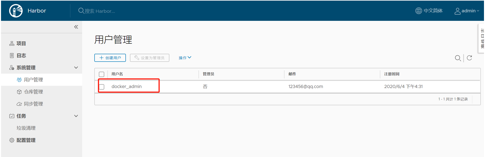

搭建本地私有仓库¶
使用registry镜像创建私有仓库¶
# 安装Docker后，可以通过官方提供的registry镜像来简单搭建一套本地私有仓库环境
[root@iZ2ze38chylj63vuj6fqiaZ ~]# docker run -d -p 5000:5000 registry
#这将自动下载并启动一个registry容器，创建本地的私有仓库服务
#默认情况下，会将仓库创建在容器的/tmp/registry目录下。可以通过-v参数来将镜像文件存放在本地的指定路径。
#将上传的镜像放到/opt/data/registry目录，在本地将启动一个私有仓库服务，监听端口为5000
[root@iZ2ze38chylj63vuj6fqiaZ ~]# docker run -d -p 5000:5000 -v /opt/data/registry/:/tmp/registry registry
管理私有仓库¶
# 先将镜像打上标签
docker tag ubuntu:14.04 10.0.2.2:5000/test
# 使用docker push上传标记的镜像
docker push 10.0.2.2:5000/test
# 使用curl查看仓库10.0.2.2:5000中的镜像
curl http://10.0.2.2:5000/v1/search
{{"num_results": 1, "query": "", "results": [{"description": "", "name": "library/ test"}]}}
#比较新的Docker版本对安全性要求较高，会要求仓库支持SSL/TLS证书。对于内部使用的私有仓库，可以自行配置证书或关闭对仓库的安全性检查。
#首先，修改Docker daemon的启动参数，添加如下参数，表示信任这个私有仓库，不进行安全证书检查：
DOCKER_OPTS="--insecure-registry 10.0.2.2:5000"
# 重启Docker服务，并从私有仓库中下载镜像到本地
sudo service docker restart
docker pull 10.0.2.2:5000/test
docker images
#下载后，还可以添加一个更通用的标签ubuntu：14.04，方便后续使用
：
docker tag 10.0.2.2:5000/test ubuntu:14.04
建立私有镜像仓库¶
Docker公司官方提供的Docker Hub镜像仓库由于服务器在国外，网速会非常慢且存在不安全因素，而国内第三方公共仓库不受自己控制，因此具有一定规模的企业都会建立自己的私有镜像仓库，上传镜像到私有镜像参考，在构建容器化应用时，可以快速地下载镜像文件使用。
我们在Docker 1.12以后的版本环境中搭建无认证的Registry。Dockerd的配置文件在/etc/docker/daemon.json中，如果没有该文件，可以手动创建。
第一步：从Docker官方镜像仓库下载Registry。
docker pull registry <版本号> ——不指定版本,表示latest版本
第二步：配置daemon.json,去掉Docker默认的https的访问。
vim /etc/docker/daemon.json
{
"insecure-registries":["10.47.43.100:5000"]
} ——增加insecure-registries的项目
第三步：重启Docker,执行以下命令。
systemctl daemon-reload docker
systemctl restart docker
第四步：无认证方式启动Registry容器。
docker run -d --name registry -p 5000:5000 --restart=always -v /opt/registry/:/var/lib/registry/ registry
第五步：测试是否启动容器。在浏览器中访问http://10.47.43.100:5000/v2/_catalog,如果返回{"repositories":[]},就代表启动成功了。
第六步：上传镜像到镜像仓库测试push功能。
docker tag MySQL 10.47.43.100:5000/MySQL——必须带有"10.47.43.100:5000/"这个前缀,然后开始上传镜像到我们建立的私有Registry
docker push 10.47.43.100:5000/MySQL
再在浏览器中访问http://10.47.43.100:5000/v2/_catalog，可以看到返回{"repositories":
["MySQL"]},说明已经上传成功。
第七步：从镜像仓库下载镜像测试pull功能。
首先删除本机存在的镜像10.47.43.100:5000/MySQL (刚才通过tag重命名的):
docker rmi 10.47.43.100:5000/MySQL
然后执行docker images,可以看到已经没有了10.47.43.100:5000/MySQL这个镜像。下面开始下载这个镜像:
docker pull 10.47.43.100:5000/MySQL
然后再执行docker images,可以看到10.47.43.100:5000/MySQL,说明下载成功了。
企业私有仓库harbor部署¶
Harbor是由VMware公司开源的企业级的Docker Registry管理项目
[root@support yum.repos.d]# wget -b https://storage.googleapis.com/harbor-releases/release-1.9.0/harbor-offline-installer-v1.9.0.tgz
Continuing in background, pid 9771.
Output will be written to ‘wget-log’.
[root@support ~]# tar zxf harbor-offline-installer-v1.9.0.tgz
[root@support ~]# cd harbor
[root@i1-CICD harbor]# cat harbor.yml |grep -v "^$"|grep -v "#"
hostname: 172.16.0.37
http:
port: 9090
部署
[root@i1-CICD harbor]# ./prepare
[root@i1-CICD harbor]# ./install.sh
[root@i1-CICD harbor]# docker-compose ps
Name Command State Ports
--------------------------------------------------------------------------------------
harbor-core /harbor/harbor_core Up
harbor-db /docker-entrypoint.sh Up 5432/tcp
harbor-jobservice /harbor/harbor_jobservice ... Up
harbor-log /bin/sh -c /usr/local/bin/ ... Up 127.0.0.1:1514->10514/tcp
harbor-portal nginx -g daemon off; Up 8080/tcp
nginx nginx -g daemon off; Up 0.0.0.0:9090->8080/tcp
redis redis-server /etc/redis.conf Up 6379/tcp
registry /entrypoint.sh /etc/regist ... Up 5000/tcp
registryctl /harbor/start.sh Up
harbor修改配置文件后重启
# docker-compose down
# ./prepare
# docker-compose up -d
Harbor 默认管理员用户为 admin ， 密码在 harbor.cfg 中设置过，默认的是Harbor12345 Harbor创建一个登陆用户。此用户用于推送镜像 